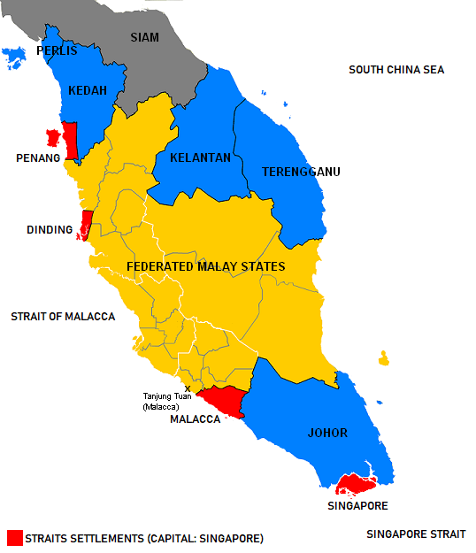

The streets of central Kuala Lumpur, the national capital of Malaysia and state capital of Selangor, were deserted in mid-May 1969. Citizens peek from behind the shutters of their houses to catch glimpses of army tanks and police trucks on patrol and mobs of Chinese and Malays (though never at the same time) wielding parangs and other makeshift weapons.
The regular citizen has no idea what is happening save for the repeated radio broadcasts claiming that the situation was under control and to not listen to rumours. But rumours are the only information available in the haze of violence, fire, and stifled media that followed the Third Malaysian General Elections.
In the months (and years) that followed, the official report of May 13 written by the National Operations Council (NOC) and several other secondary works attempted to make sense of the chaos. Each author draws from a similar pool of evidence — the things they’ve heard and seen, and that which was recorded. Yet, each author comes away with a different interpretation of events. None of the authors present a singular Truth behind May 13, but attempt to explain the tragedy’s significance in Malaysia.
This article provides an academic view of May 13. It attempts to show you, dear reader, who may not have an interest in reading these works yourself or find them inaccessible, what historians have to say about May 13. After reading this 15-minute article, I hope that you will learn the different interpretations of May 13 and how they came to be, so you might form your own conclusions on what the tragedy means for Malaysians and how we might move forward from it.
Background
I’m going to give a bit of background about May 13, so we’re all on the same page. There are a few key points of information we know for certain.
1
The Alliance Party failed to gain a two-thirds supermajority in parliament for the first time since Malaysia’s independence in 1957.
The Alliance Party was a coalition of three political parties, the United Malays National Organisation (UMNO), the Malaysian Chinese Association (MCA) and the Malaysian Indian Congress (MIC). Winning the two-thirds supermajority gave it the power to change the constitution at will since a two-third vote in the Federal Council was necessary to make any amendments.
2
The Alliance Party failed to win the simple majority in the state elections for Selangor.
This unseated the incumbent Dato Harun bin Idris (also the UMNO state chief) from his position as Menteri Besar (Chief Minister) of the federal and state capital.
ALLIANCE
OPPOSITION
DAP Gerakan Independent
3
After polling results were announced on 10 May 1969, three parties organised a public procession through Kuala Lumpur.
10 May
3rd General Elections Polling
11 May
DAP Procession
12 May
Gerakan Procession
13 May
UMNO Procession
4
On 13 May 1969, violence broke out mainly along racial lines with mostly Chinese casualties, sending Malaysia into a state of emergency and parliamentary suspension for the next 18 months.
MALAY (25)
INDIAN (13)
CHINESE (143)
OTHER (13)
The Official Report
The official governmental report for May 13 was published in October of the same year (1969) by the National Operations Council (NOC). The NOC was formed by Malaysia’s first and at the time current Prime Minister Tunku Abdul Rahman and headed by his deputy Tun Abdul Razak to restore law and order in the wake of the riots. The May 13 Tragedy: A Report, includes the statistics of deaths, injuries, arrests and weapons confiscated by race and states. Its evidence is based on reports from select eyewitnesses and the coloured personal experience of the NOC who were in Kuala Lumpur during the ordeal, which makes the official account rife with bias.
The official report places blame squarely on:
Communist insurgents
Secret societies
Political extremists, coded as the opposition parties, mostly representing the Chinese, who were ‘attacking’ the articles of the Constitution which safeguard Malay privileges
‘Far-out and impracticable proposals’ from ultra-radical Malays for an all-Malay government.
But nowhere in the report does it acknowledge the government’s role in May 13. It also attempted to prove that the police and army had been ‘partial on purely racial grounds’. Several other works have arisen since the report’s publication to counter the official narrative.
Click on the cards to skip to the author's work!
John Slimming (?-1978)
Malaysia: Death of a Democracy (1969)
May 13 was a result of UMNO’s encouragement and its willful ignorance of the impending violence.
Goh Cheng Teik (1944-2019)
The May Thirteenth Incident and Democracy in Malaysia (1971)
May 13 was a result of a series of rational decisions made by anxious people.
Kua Kia Soong (1951-)
May 13: Declassified Documents on the Malaysian Riots of 1969 (2007)
May 13 was a ‘coup d’etat of the Malay state capitalist class against to depose Tunku Abdul Rahman who represented the outdated Malay aristocracy
Karl von Vorys (1928-2004)
Democracy Without Consensus: Communalism and Political Stability in Malaysia (2015)
INADMISSABLE
Back to author cards
Malaysia: Death of a Democracy by John Slimming (1969)
John Slimming’s book Malaysia: Death of a Democracy, published in 1969 after the NOC’s report and Tunku Abdul Rahman’s political memoir Sa-belum Dan Sa-lepas Mei 13 (Before and After May 13), drew on interviews with security forces he gained confidence with as a former member of the Federation of MalayaPolice, and personal experiences he collected from a variety of people during May 13, having fluency in Cantonese, the dialect spoken by the majority of the Chinese population in Kuala Lumpur, and Malay, and the privilege of being a European foreigner which allowed him to move through the city somewhat freely.
According to the NOC report, the violence erupted at Alhambra Theatre in Setapak at about 6 pm on 13 May 1969 when a group of Malays from the Gombak district were attacked by some Chinese and Indians while they were making their way to Dato Harun’s house for the procession scheduled to begin at 7:30 pm.
The witnesses cited only reported on the commotion after the fights started, even though the report displays undue confidence in the ‘established fact’ that the exchange was one-sidedly caused by taunting from Chinese and Indians, which ‘developed rapidly into stone and bottle-throwing’. Nevertheless, this event was the spark that set off the gathered Malays in front of Dato Harun’s house less than an hour later into ‘spontaneous and violent anti-Chinese reaction’ that devolved far out of the Chief Minister’s hands and spread over the streets of Kuala Lumpur. The Malays had been too incensed by the taunting from the Chinese during DAP and Gerakan’s processions over the weekend to control themselves.
Slimming agreed that the Malays were highly emotional from the taunting but dismissed the Setapak incident as May 13’s spark. In his account, the UMNO procession started a little before 6:30 pm from Dato Harun’s house and immediately devolved into anti-Chinese violence. Slimming did not explain why the procession left an hour earlier than the planned time or any reasons more than ‘savagery’ for their attacks. While Slimming saw the Chinese and Indian communities as protecting themselves against the Malays, the NOC report argued the opposite.
Despite their differences, the NOC and Slimming agreed that the gathering of Malays at Dato Harun’s house provided significant kindling for the flames of mass violence to erupt. The government officials, Dato Harun in particular, knew that the procession would lead to violence, yet chose to encourage it and refused to stop it while they could still assert control.
The night before the riots, Dato Harun went around to seven Malay villages in Selangor to get the support of local UMNO leaders and get all branches of the Selangor UMNO to be involved. The village of Kampong Baru in particular, which Dato Harun’s house bordered, was home to many squatters of rural Malays who had moved to the city unsuccessfully looking for employment. Thousands of youths from the area were also trained as Pemuda Tahan Lasak (The Rugged Youth) under UMNO Youth as campaign workers to ‘defend the sovereignty of the nation’ and rural campaigning given that they had been fighting along communal lines.
Slimming’s investigation and an anonymous account from a then University of Malaya student (Cerita Mei 13 Kami) showed that Malays were flocking to Kuala Lumpur from bordering states like Negeri Sembilan and Perak since 12 May. The former account suggested that radical Malay students actively recruited other Malays to join the procession, increasing the number of expected participants. Their accounts also agree that many of these Malays were armed at the procession, ready for violence long before the Setapak incident which only served to fan an already burning flame.
Many hours before the planned procession, hundreds of Malays had already begun to gather outside Harun’s house wearing red and white cloth and armed to varying degrees with machetes and other makeshift weapons. On a Tuesday (May 13) when people were going for lunch and later going home from work, the gathering in front of Harun’s house would be in plain sight given its location on a major road in the heart of Kuala Lumpur, no more than two kilometres away from the UMNO headquarters. It begs the question that Slimming posed in his book:
Why was the Government taken by surprise when so many people, police and civilians alike, were fully aware of what was going to happen, several hours before the slaughter began?
There were several opportunities where Harun could have decided to and was actively prompted to discourage the UMNO procession. The first instance was when the idea for the procession was pitched. Dato Harun had ‘tried to discourage [a group of UMNO supporters] from holding a victory procession’ for fear that ‘something untoward might happen’. Contrary to the police concerns that the UMNO procession would be attacked, this statement was fearful of the Malays themselves creating disorder for it was only through assurance that they would hold the procession in a ‘peaceful and orderly manner’ that he approved it. Harun was popular in Kampong Baru and among the UMNO Youth, but he was overconfident to think he could control a group numbering in the hundreds with just his voice. Even as the crowds grew outside his house with palpable intensity and obvious weaponry, Harun rejected his second chance to call off the procession or at the very least disarm and increase police presence around 3 pm when two senior police officers warned him about the possibility of violence. These rumours of violence were seconded by the Selangor Police Headquarters, which the NOC reports as hearing rumours that it would be a ‘peaceful procession but, one that could respond in kind if attacked’.
In Slimming’s view, the riots directly resulted from UMNO’s encouragement and its willful ignorance of the impending violence.
Slimming additionally exonerated the Communists, which the NOC report highlighted as one of the main causes of the riots through an examination of the Labour Party funeral procession on 9 May 1969. Despite the sensitivity to communist threats after their insurgency during the Emergency (1948-1960), the government still permitted the funeral procession on the eve of polling day. The police did not attempt to stop the procession when Maoist chanting and diversions from the approved route began. The police’s lassitude in dealing with the demonstrations and the government’s contradictory stance on Communism suggests more underfoot than Slimming digs into in his book. The Communists held a peaceful demonstration even with every opportunity to disrupt the general elections, which they had boycotted to push for class over communal solidarity, proving, according to Slimming, that the Communists were not involved.
The May Thirteenth Incident and Democracy in Malaysia by Goh Cheng Teik (1971)
Professor of History and International Relations at University Malaya Goh Cheng Teik’s The May Thirteenth Incident and Democracy in Malaysia also draws on interviews with several politicians and reporters. Written two years after the event, Goh’s work builds off of Slimming’s with a comparison of the political climate in Selangor compared to two other states, namely Perak and Penang, where the Alliance Party’s position was threatened in sparking violence, a detailed appendix of all significant political entities and actors during May 13 and an examination of the impact and role of East Malaysia.
In comparison with Slimming, Goh’s work is more focused on understanding what May 13 means for democracy in Malaysia rather than on assigning blame. He focuses on the structural features of Malaysian society which caused May 13. The book even concludes with a contradictory solution for minority groups to appease the existing Malay-leaning structures to achieve democracy — a system that is supposed to fairly represent the people’s interests.
Goh’s book interpreted the events as a series of rational decisions made by anxious people. In his view, the Alliance’s increasing loss of power to the opposition and Dato Harun’s UMNO procession were rational responses to a crisis of democracy, catalysed by racial slurs and threats from one ethnic community against another. However, his arguments of rationality fall short when we assess the government’s reactions to the oft-cited causes of May 13 — the opposition’s victory processions.
On 4 May 1969, a police officer shot and killed a Chinese youth LPM member allegedly in self-defence when they were caught putting up anti-election posters in Kepong, Kuala Lumpur. His body was frozen while the LPM arranged to hold a funeral procession on the polling day, which the police (most likely in guilt) compromised to allow them to hold it on 9 May (Friday) instead. The procession was meant to be limited to non-main roads and a thousand participants, but the LPM went all out. The almost entirely Chinese procession shouted Maoist chants and racially incisive remarks against the Malays as they marched through the main streets of Kuala Lumpur, stalling traffic and creating a fearsome display. No one was injured or killed at the end of it, but it thickened the Malay-Chinese tensions. The NOC and other secondary works do not indicate that any action was taken against the LPM after their procession.
Similarly, during the unlicensed processions on the day after the election results were released (11 May), the police interviewed by the NOC reported seeing separate processions by the DAP going around the city, jeering at the police with obscenities, yet no action was taken against them. Perhaps we might argue that the police could not chase down small groups of people, but by the police accounts, these insults continued for two whole days, all day long. The insults were directed at civilian Malays and the police, with one of the processions consisting of about 500 scooters on 12 May. The procession was of the size and potential threat to warrant police and government attention. Despite these public, prolonged warning signs, Gerakan was still granted a police permit to hold their procession on the morning of 12 May without any precautionary measures taken against the slew of racial insults. The government seemed content to allow the people to run amok, perhaps, as Kua Kia Soong suggested, to show the people that they had inadvertently chosen a chaos-ridden future by not supporting the Alliance.
If the government were acting rationally, why did it not take rational steps to preserve the public order? Why did it instead dismiss glaringly obvious signs of discord and choose not to uphold the rule of law against those who would discriminate against others by race?
Goh’s book does not apportion blame strongly on any individual or entity as Slimming does and for founded fears of persecution under the Sedition Act, amended during the state of emergency, which criminalises any acts written or spoken which questions the Federal Constitution or generates ‘feelings of ill-will and hostility between the different races’. Interpreted broadly, Goh and Slimming’s books potentially fall under the Sedition Act. Slimming never returned to Malaysia after publishing his book, purportedly because he was denied entry.
May 13: Declassified Documents on the Malaysian Riots of 1969 by Kua Kia Soong (2007)
Following these two books, there was a dry spell with no substantial works written about May 13 until Kua Kia Soong’s May 13: Declassified Documents on the Malaysian Riots of 1969, published in 2007, almost 40 years after the event. It is difficult to determine the impact of the Sedition Act on the production of academic works, but there was certainly a shortage of primary sources with media censorship and the taboo with speaking about May 13.
In light of this, Kua was poised to deal with both challenges having been arrested for over a year under the Internal Security Act in 1987 for his part in a Chinese education movement, having shown tenacity to continue publishing works critical about Malaysia, and having founded Suara Rakyat Malaysia (SUARAM), a human rights NGO. Kua’s book also drew on a new evidentiary base with the documents released from the Public Records Office (now the National Archives) in the United Kingdom after 30 years. These documents, including dispatches from the British Foreign and Commonwealth Offices in countries like Australia, New Zealand and Indonesia, reports from the British High Commissioner in Malaysia and several banned reports from foreign correspondents.
Kua’s book is a refinement of Slimming’s argument in reframing May 13 as a ‘coup d’etat of the Malay state capitalist class against to depose [Tunku Abdul Rahman] who represented the outdated Malay aristocracy’. He also reinforces Slimming’s critique of police and army brutality against the Chinese with the declassified documents’ statistics showing a far higher number of casualties, still disproportionately Chinese. His work is scathing and unapologetic in its demands for work towards a better Malaysia, which is opposed to the fatalist conclusions of Slimming and Goh.
Although Kua claimed that the documents released ‘clearly show that there was a plan to unleash the violence’, his book failed to tie his points to the main argument. He argued for three main points which bolstered his claim of a coup.
1
Existing tensions within UMNO between the old (Malay aristocracy) and new (Malay elites) guard.
Kua assessed that the old guard preferred increasing private capital over the new guard’s preference for increasing state-held capital which created conflict when deciding economic policies. Before British colonial rule, the Malay peninsula was governed by nine independent royal kingdoms, each governed by its own sultan.
When the British Empire took over in the 19th century, they began indirect rule over these nine kingdoms and direct administration over the Straits Settlements comprising Penang, Melaka and Singapore. Since Malaysia’s independence in 1957, the sultans of these nine kingdoms have had their powers severely limited after being co-opted in Malaysia as a constitutional monarchy. Every five years, one of the nine sultans is nominated and elected amongst themselves to be the Yang Di-Pertuan Agong.
These sultans carried on the past feudal system and their roles as protectors of the Malays and their rights. Kua showed that Tun Abdul Razak had the motive to unseat Tunku Abdul Rahman, Malaysia’s first and at the time current prime minister and a prince of the state of Kedah, to shift power away from the Malay royalty to the Malay elites.

The blue states represent the Unfederated Malay States which, unlike the Federated Malay States, retained more independence from the British during their colonial rule.
2
The Alliance was losing favour with the people — its foothold to power.
The radical Pan Malayan Islamic Party (PMIP) appealed to the anxieties of the lower-class, religious Malays, claiming that UMNO, which mainly represented the Alliance coalition, had betrayed the Malays by joining hands with the Chinese MCA and Indian MIC parties. DAP appealed to the urban Chinese and Indians by directly opposing the special privileges afforded to the Malays, while Gerakan swept up the Chinese and Indian moderates and professionals with a non-communal political stance. With this, the opposition parties put up a strong resistance against the Alliance, poking holes in their strategy of compromise between races which diluted their supporter base. The 1969 election results only served to cement the Alliance’s increasing loss of power, giving them additional motivation to act quickly to seize power.
3
The speedy enforcement of pro-Malay policies in the wake of May 13 illustrated how the Malay elites gained the most from the tragedy.
The NOC used the state of emergency to amend the Sedition Act to criminalise any written or spoken acts that question the Federal Constitution or generate ‘feelings of ill-will and hostility between the different races’. The amendment prevented dissension and allowed the government to silence its opponents with a broad interpretation of the law. Kua himself faced the consequences of the new law when he was arrested for over a year under the Internal Security Act, an offshoot of the Sedition Act, in 1987 for his part in a Chinese education movement, but still tenaciously continued publishing works critical about Malaysia, and founding Suara Rakyat Malaysia (SUARAM), a human rights NGO.
He also asserted that the posturing of May 13 as a result of economic inequality paved the way for the New Economic Policy (NEP) of 1970 which aimed to transfer capital ownership to the Malays and encourage Malay entrepreneurship under the guise of eradicating poverty. Despite the scheme’s generous use of public funding, the NEP failed to reach its targets and instead turned into a sinkhole for corruption. The NOC’s policies to foster racial unity manifested in the Rukun Negara (national ideologies) drawn up without public consultation and new bumiputera (Malay and indigenous peoples) quotas for universities to even out inequality. Although not covered by Kua and other academics, Sabah and Sarawak had the Petroleum Mining Act forced on them during the state of emergency, which took away their oil rights in 1969 and enriched the Malay elites of the Federal Government without proportional benefit to East Malaysia. Each of these policies drawn up for the people ended up benefiting only one segment of society and consolidated power in the hands of the ruling elites.
Kua effectively argued the presence of these three factors but failed to explicitly tie them to his central argument. His introduction strongly indicts the government for its complicity in May 13, but the rest of his book reads like a chronology of well-argued phenomena. He did not prove that the government had premeditated May 13, only that they had the motive for it.
Democracy Without Consensus: Communalism and Political Stability in Malaysia by Karl von Vorys (2015)
The final work which added substantial arguments on the government’s complicity in May 13 was Karl von Vorys’s book Democracy Without Consensus: Communalism and Political Stability in Malaysia. His work can be read as a reassessment of Goh’s answer to the question of Malaysia’s future as a democratic state. Published in 2015, 44 years after Goh, von Vorys examined the robustness of Malaysia’s political systems since its independence when the country had ample time to work out its growing pains.
von Vorys gave an extremely detailed account of the events leading up to May 13 in the chapter Armed Confrontation: From Polls to Parangs which allowed readers a glimpse into the room where it happened. Taken at face value, his work would have cast Dato Harun in a better light than Slimming in narrating the chief minister’s good intentions. von Vorys claimed that Dato Harun was a victim of the Malays’ passion and the will of more powerful UMNO officials. The police permit for the procession was originally signed in his name without his knowledge, even if he continued to uphold it by making every effort to ensure the procession proceeded peacefully.
However, the glaring problem with his characterisation of Dato Harun and all the events during May 13 is the absence of an explicitly defined source base and methodology. Aside from the blurb on the book jacket, which claims that von Vorys was present during the May 13 riots, he does not expand on how he came by the information, especially details of conversations in the meeting rooms of political parties and the internal thought process of party members, or which parts of his narrative were merely recapitulations of the NOC report as opposed to his own sources. His earlier chapters analysing the campaigns and manifestos of the political parties involved in the General Elections hold up better against scrutiny because his views can at least be corroborated with newspaper reports and the original manifestos published by each party. However, his work on May 13 itself does not hold water and is therefore inadmissible in understanding what happened during May 13.
Other academic works
Without new evidence or a substantial archival base to work with, other academics have analysed May 13 through explicitly addressing the government’s attempts to silence the event. Por Heong Hong’s 2017 article Family Narratives and Abandoned Monuments of the May 13 Riot in the Sungai Buloh Leprosarium explored the government’s attempt to create a national forgetting by juxtaposing the burial grounds for May 13 victims with those for war victims.
Sungair Buloh Leprosarium Cemetery
Taiping War Cemetery
While Ying Xin Show’s 2021 article Narrating the racial riots of 13 May 1969: gender and postmemory in Malaysian literature analyses fiction set during May 13 written by three female Malaysian authors of different races to understand how the children and specifically women following May 13 remember the event without directly experiencing it.
《告別的年代》The Era of Farewell by 黎紫书 (Li Zishu)
The Weight of Our Sky by Hanna Alkaf
Evening is the Whole Day by Preeta Samarasan
These works interrogate how May 13 is remembered rather than what happened, correlated with the ‘memory boom’ in the early 21st century described by Anna Green where cultural history became more critical of how modes of remembering the past affect social and psychological relationships, and relevant to May 13 — its impact on nation-building. These works revealed public desire to revisit May 13 towards national healing, which needs cooperation from the government and acknowledgement of its role in the tragedy.
Now what?
Many others have come forward in the oral history projects hosted by Malaysiakini, May 13 Incident Oral History Group, among others to record the experiences of those who lived through May 13, as an antidote against national forgetting. Their stories form the threads of the rich and complex tapestry we call history. But perhaps a tapestry is the wrong metaphor because it implies immutability. Perhaps each story is a bead in a kaleidoscope. You could turn the kaleidoscope around and around to see a different pattern, but the colours will never change. No amount of twisting can change the facts even if we might interpret them differently.
I do not bring up the past to stir trouble, but to call forth the same hopeful note that the works of the NOC, Slimming, Goh, Kua and von Vorys concluded with. Even if their visions differed, all of them believed that we could build a more harmonious Malaysia. The question is — will the government uphold the interests of all its citizens, regardless of race, religion, gender or sexuality? And if it doesn’t, how will we keep the government accountable?